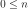

MonomialFunctionFactory¶
-
class
MonomialFunctionFactory(*args)¶ Factory for univariate monomial functions.
Methods
build(order)Build the  -th order univariate function.
-th order univariate function.buildAsMonomialFunction(order)Build the -th order monomial function.getClassName()Accessor to the object’s name. getId()Accessor to the object’s id. getName()Accessor to the object’s name. getShadowedId()Accessor to the object’s shadowed id. getVisibility()Accessor to the object’s visibility state. hasName()Test if the object is named. hasVisibleName()Test if the object has a distinguishable name. setName(name)Accessor to the object’s name. setShadowedId(id)Accessor to the object’s shadowed id. setVisibility(visible)Accessor to the object’s visibility state. -
__init__(*args)¶ Initialize self. See help(type(self)) for accurate signature.
-
build(order)¶ Build the
-th order univariate function.Parameters: - n : int, 
Function order.
Returns: - function :
UniVariateFunction Requested univariate function.
-
buildAsMonomialFunction(order)¶ Build the
-th order monomial function.Parameters: - n : int,
Function order.
Returns: - function :
MonomialFunction Requested monomial function.
-
getClassName()¶ Accessor to the object’s name.
Returns: - class_name : str
The object class name (object.__class__.__name__).
-
getId()¶ Accessor to the object’s id.
Returns: - id : int
Internal unique identifier.
-
getName()¶ Accessor to the object’s name.
Returns: - name : str
The name of the object.
-
getShadowedId()¶ Accessor to the object’s shadowed id.
Returns: - id : int
Internal unique identifier.
-
getVisibility()¶ Accessor to the object’s visibility state.
Returns: - visible : bool
Visibility flag.
-
hasName()¶ Test if the object is named.
Returns: - hasName : bool
True if the name is not empty.
-
hasVisibleName()¶ Test if the object has a distinguishable name.
Returns: - hasVisibleName : bool
True if the name is not empty and not the default one.
-
setName(name)¶ Accessor to the object’s name.
Parameters: - name : str
The name of the object.
-
setShadowedId(id)¶ Accessor to the object’s shadowed id.
Parameters: - id : int
Internal unique identifier.
-
setVisibility(visible)¶ Accessor to the object’s visibility state.
Parameters: - visible : bool
Visibility flag.
-